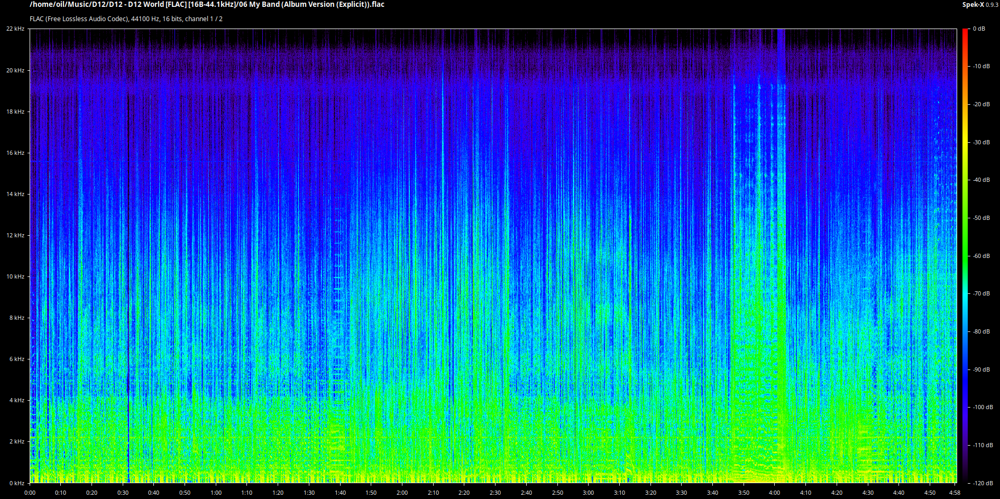
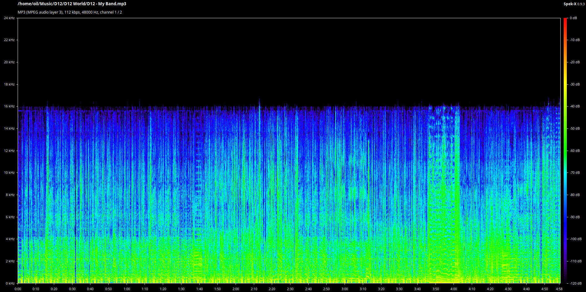
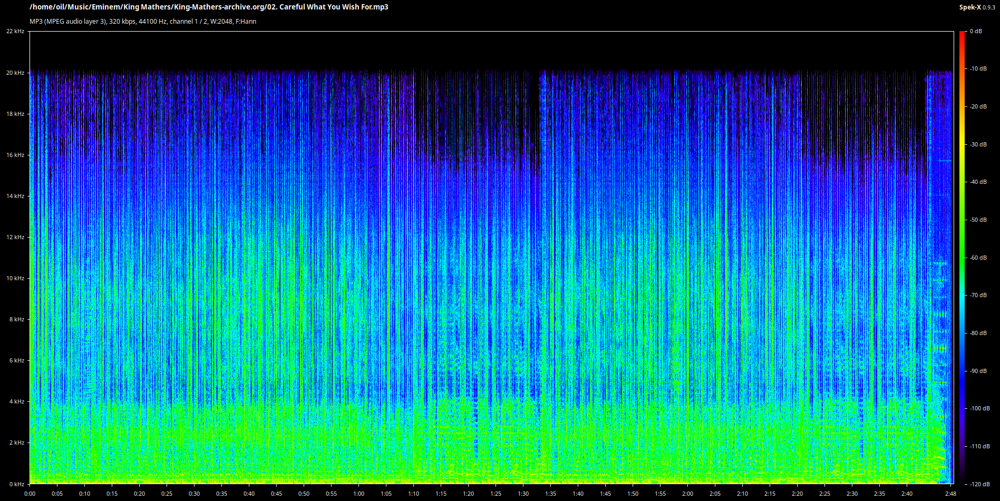
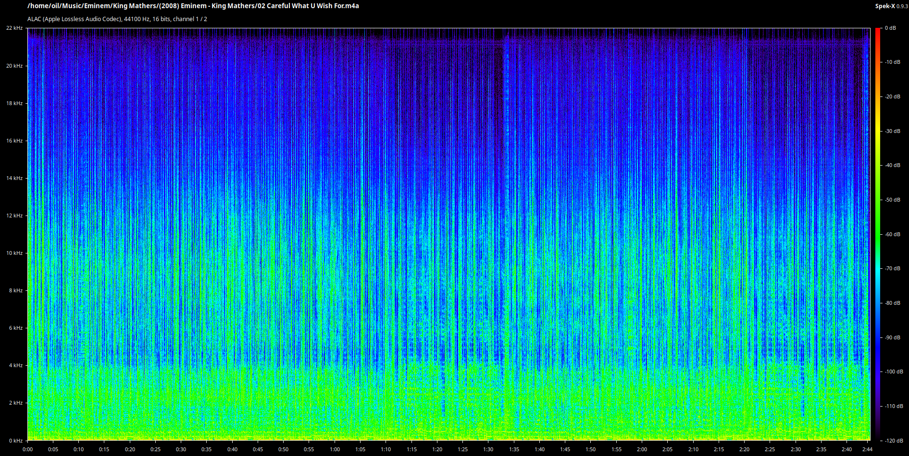
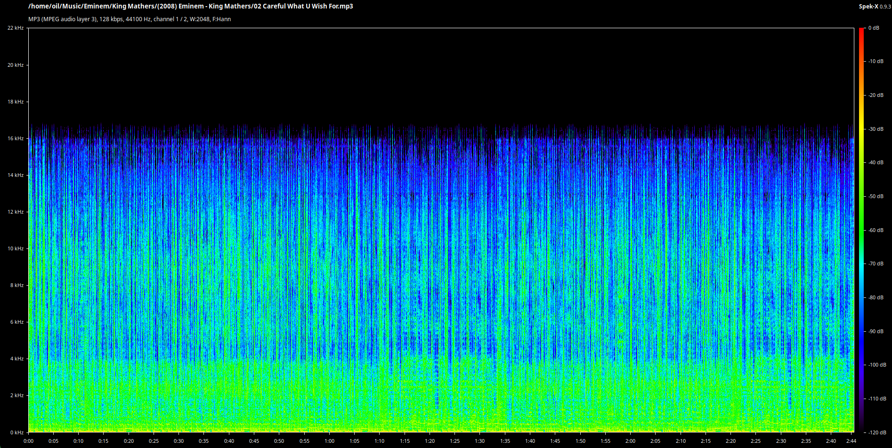

Screw Spotify
It's certainly been a while since my last blog post. I keep forgetting this thing exists.
I love my CDs. I take my CD player anywhere I go, whether that's school, the doctor's, long car rides, wherever I feel like listening to music. The way I can change the discs by hand and just looking at how the thing works intrigues me. It makes my brain blerk with resonance. CDs have given me a greater passion for music than any streaming service can provide. The rewarding feeling I get when I play a CD highly outweighs the wasteful skipping of songs over and over again in a playlist on Spotify. Besides all that, CDs hold higher-quality audio than most streaming services out there. They're comparable to studio-quality masters as opposed to the compressed stream of average-quality noise an app puts out. Pair that unmatchable quality with some nice IEMs (which I do so happen to have), and I found myself in love with CDs.
One time, I went down a tiny little rabbit hole. Actually, it was more like a rabbit small-indent-in-the-dirt. I installed a spectral analyzer and shoved a few audio files into it. The first image shows the song My Band by D12 in lossless FLAC audio. The second image shows the same song downloaded from YouTube as an MP3.


See the difference? There's a larger frequency range in the FLAC file than in the horribly compressed MP3. Now I'd like to direct your attention to these next images.



:(" />The first image shows an unreleased track by Eminem, Careful What You Wish For, in high-quality MP3 audio. It's definitely compressed, but it still sounds very noice. The second image shows a (probably) lossless M4A file of the same song. This is amazing, possibly even CD worthy. This whole album is unreleased and I wanted it on a CD because I thought it would be neat. So I went and burned a third set of files. The third image shows the quality of this third set of files I burned. So now I'm straight up losing my shit cause I just wasted a CD on useless compressed audio when the nice quality files were literally in the same folder. And not only that, my friend wanted a copy so I went ahead and burned another CD with the same damn files AGAIN like an idiot.
Long story short: I think I'm becoming an audiophile.